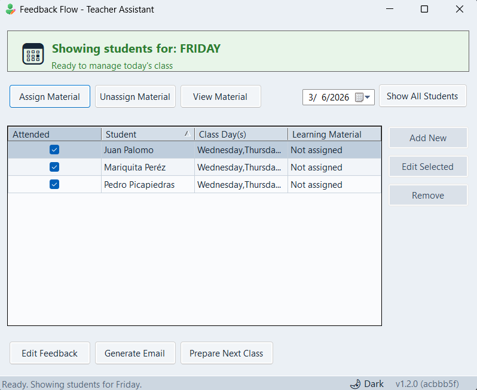
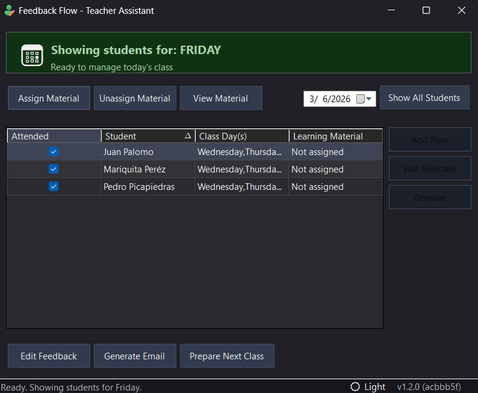

Automate student notes, organize individualized class materials, and generate professional email drafts in seconds.


Automatically creates date-stamped folder structures for every student. Stay organized without trying.
Assign any document to each student — PDF, Word, PowerPoint, or ODT. The app tracks who gets which material for fully personalized learning.
Generates drafts for "New Outlook" with attachments included. You just write the body and click send.
100% Local processing. Your student data never leaves your computer. This ensures total data privacy.